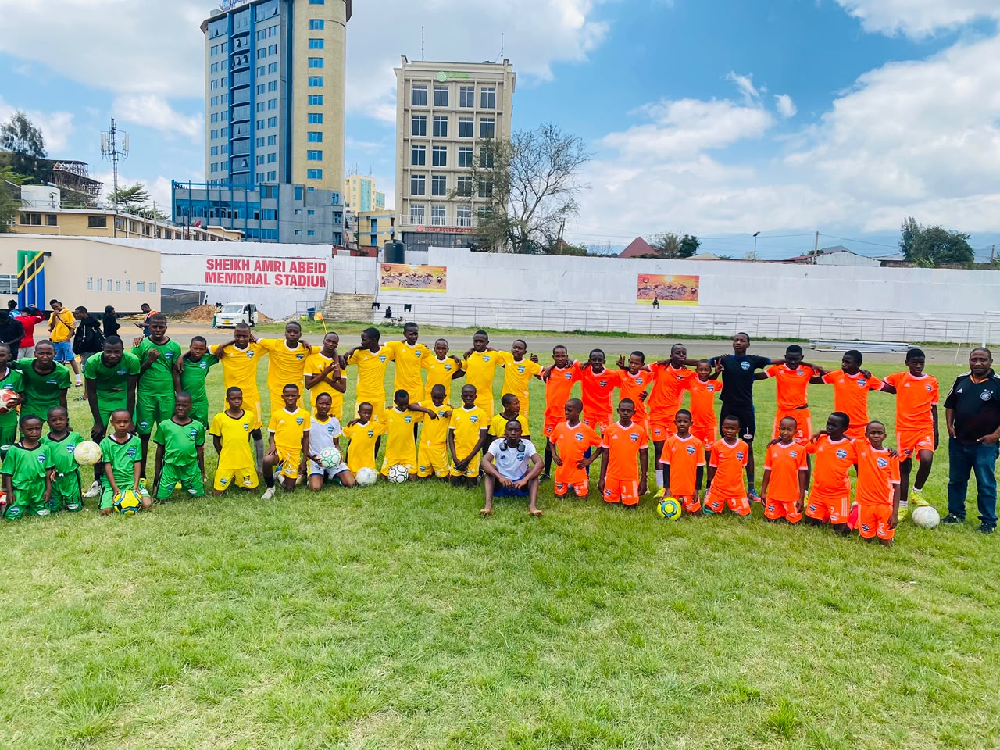
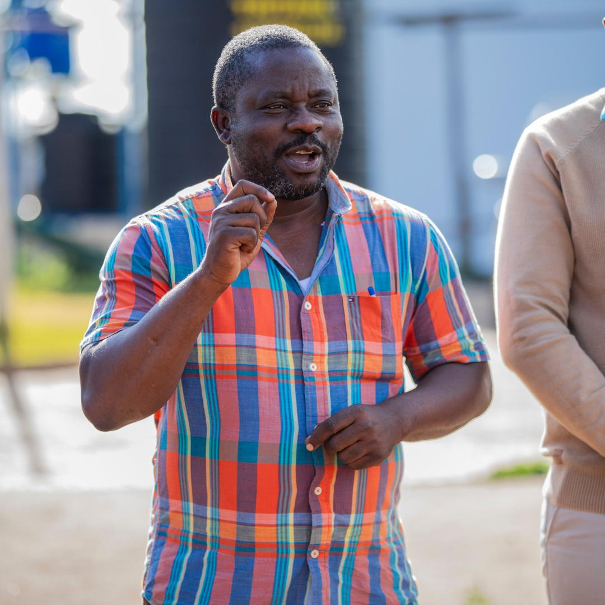
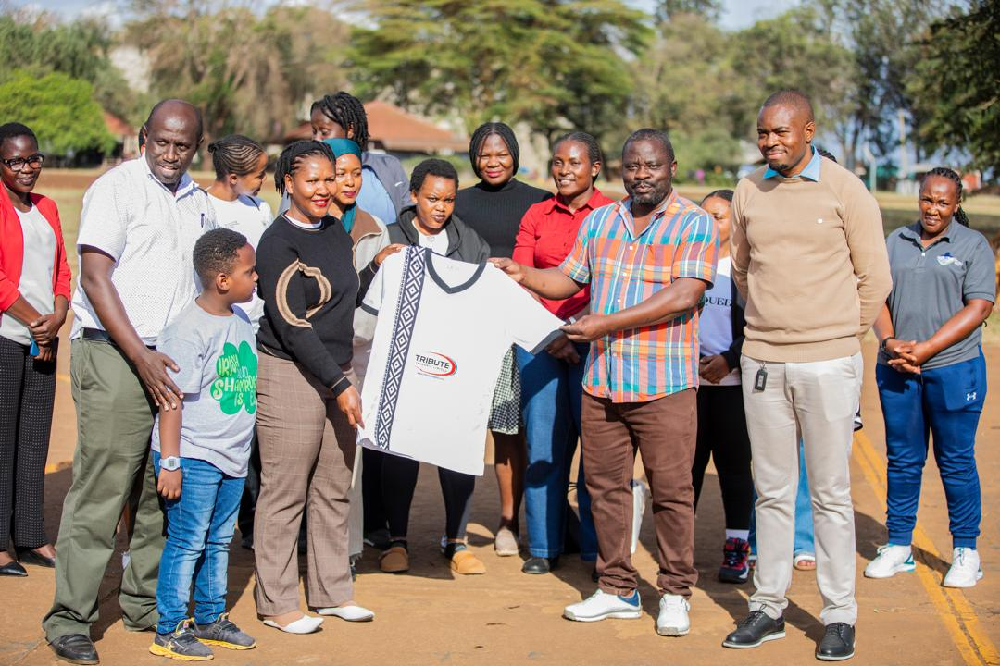
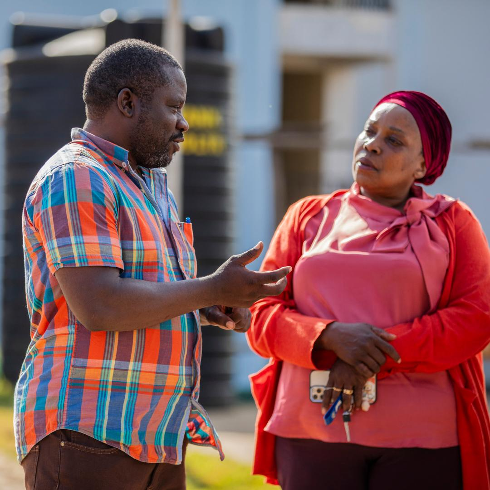
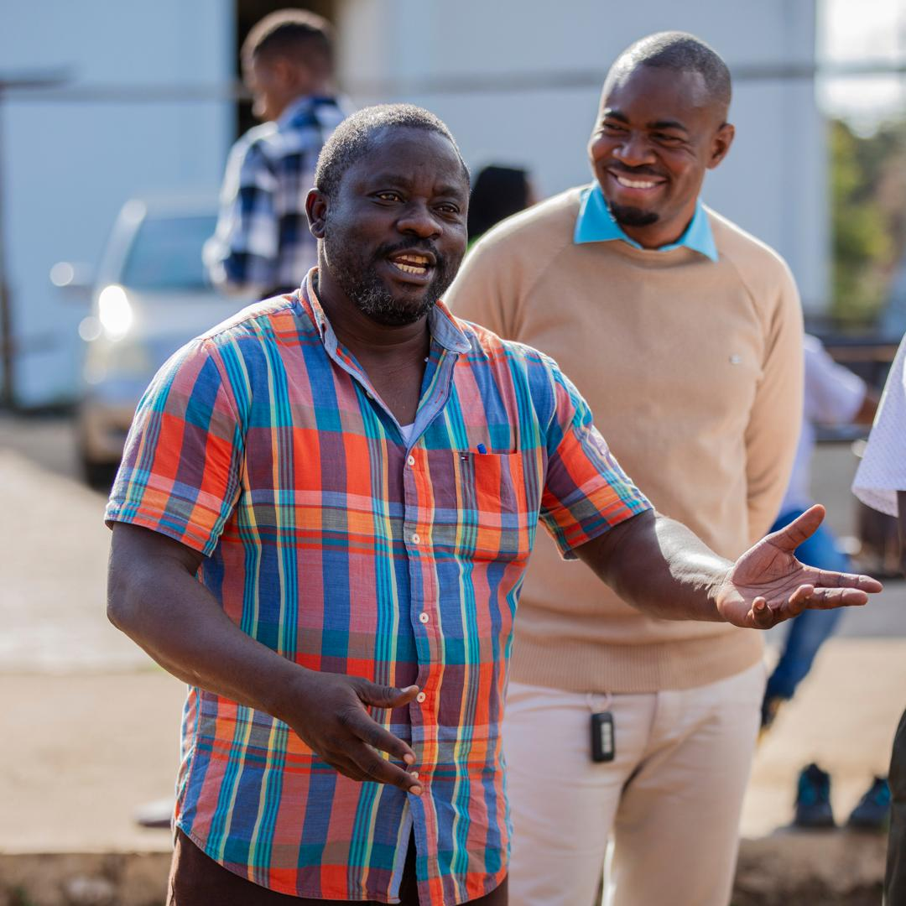

Arusha Dream Football Centre was established with a singular, transformative conviction: that every young person, regardless of their family's economic circumstances, deserves an authentic opportunity to discover and nurture their football talent. Located in Sakina Area, Elerai Ward, Arusha, Tanzania, our Centre provides completely free, structured, and high-quality coaching to boys and girls from the age of 5 to Under-20.
Unlike conventional private sports academies, Arusha Dream Football Centre does not charge joining fees, weekly dues, monthly training fees, or kit contributions. We provide footballs, training cones, bibs, playing boots, and travelling tracksuits free of charge to all enrolled players. We believe financial limitations should never silence a child's dream or deprive our nation of gifted athletes.
Player development at Arusha Dream FC follows a progressive 6-stage pathway designed to address the physical, technical, tactical, psychological, and social needs of young athletes:
At Arusha Dream Football Centre, talent alone is never enough. We teach our young athletes that true success requires: Discipline + Education + Hard Work + Respect + Commitment + Teamwork. School attendance and academic commitment are actively monitored by our welfare team. In addition, our safeguarding and child protection guidelines ensure every young athlete trains in an environment that is safe, respectful, and encouraging.
As our enrollment expands beyond 65 active players, we invite strategic partners, corporate sponsors, football stakeholders, and well-wishers to support our journey. Support can include supplying training balls and boots, sponsoring tournament participation, assisting with pitch hire fees, or contributing towards our envisioned hostel facility for talented youth from remote up-country areas.

October 2026 |
Arusha Dream Football Centre is bringing real hope and discipline to the youth of our community. Seeing our children training with proper boots and balls completely for free is a blessing.

October 2026 |
My son has become more disciplined and committed to his school homework since joining Arusha Dream FC. The coaches genuinely care about the children's education and character.

October 2026 |
Our coaching philosophy focuses on long-term development rather than short-term scorelines. We build technique, confidence, and tactical maturity step by step.